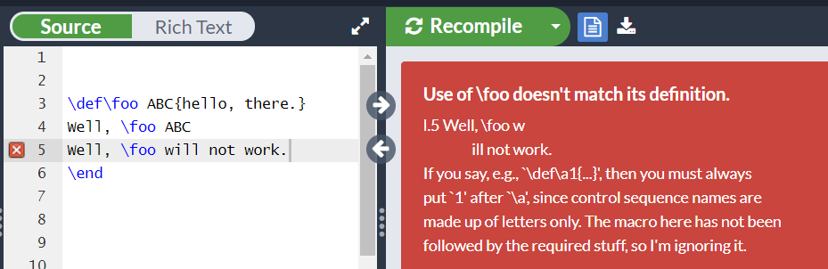
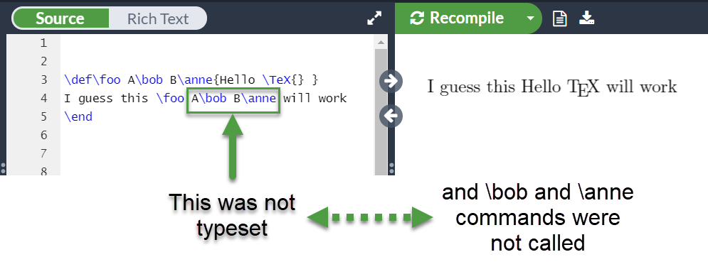
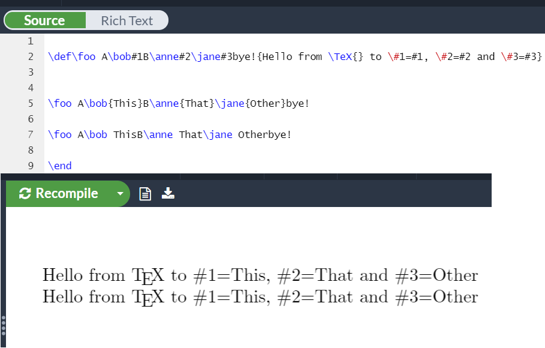
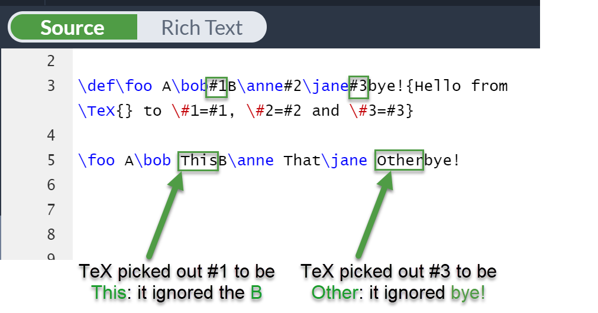
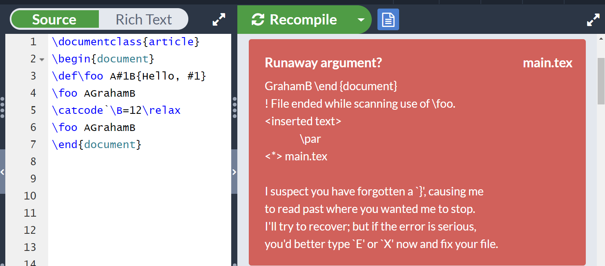

How TeX macros actually work: Part 4
Introduction and overview
In Parts 1–3 we took a deep-dive into some low-level backgound details in preparation for understanding how TeX macros work. In this article we are going to “come up for some air” to review some basic practical principles of TeX macros in readiness for another deep-dive in Parts 5 and 6. Throughout this article we are going to show example macros defined using the TeX primitive command \def: we won’t use the, perhaps more familiar, LaTeX command \newcommand. There’s a very good reason for this: our objective is to understand the fundamental principles underlying TeX’s macro behaviour but to do that we need to use core commands built into TeX software. LaTeX commands, such as \newcommand, are themselves macros: commands with specific programmed behaviour which are, ultimately, constructed from layers of lower-level TeX primitive commands. To better understand the fundamental behaviour of TeX we have to use TeX primitives, not LaTeX macros.
Where are we heading?
In essence, we are working towards an explanation of macros as a specialized form of token list: when you instruct TeX to define a macro it creates a sequence of tokens (a token list) and stores them in its memory linked to a name that you define. In Parts 5 and 6 we will look at macro token lists in some detail but if you’d prefer to jump off this article to read some background information you can find that in What is a TeX token list?
Token lists for macros, and their parameters, incorporate a few additional twists which we’ll work through in detail—and use plenty of examples. To better understand TeX’s macro processing behaviour(s) there’s really one key factor to remember: TeX only thinks about characters at the earliest stage of input processing: from that point on it’s tokens all the way! Over this, and the remaining articles in this series, we will explore the role that tokens play in TeX macros.
The four parts of a macro
Reminder: macro parameters and macro arguments
Before we start it’s worth reminding ourselves of the difference between a macro’s parameters and a macro’s arguments, because we’ll be using both terms throughout this article. Suppose you define a macro \foo
\def\foo#1#2{This is #1, this is #2}
The constructs (tokens) #1, #2 (up to #9) are called the macro’s parameters: think of them as “placeholders” for the actual data you will use when you call the macro:
\foo{alpha}{beta}
Here, alpha and beta are the arguments used with this call of \foo: a macro’s arguments are the actual values fed into the parameter placeholders (#1, #2... #9) used when you defined the macro.
Macro definition: has 4 elements
We’ll start with what, perhaps, looks like a slightly formal definition of a macro, but it does provide a useful framework for further discussions.
Any macro definition is comprised of 4 parts:
<TeX macro primitive><macro name><parameter text>{<replacement text>}
where:
<TeX macro primitive>: one of\def,\edef,\gdefor\xdef;<macro name>: the name given to your macro command, such as\foo;<parameter text>: this can be absent, but, if one is present, it is a series of tokens that appear before the<replacement text>of the macro. The<parameter text>can contain macro parameters (#1,#2...#9) and other token types. In essence, and as we’ll see in detail, the<parameter text>provides a sort of token template that TeX uses to work out which tokens the user wants to use as the macro’s arguments: when you call a macro TeX feeds the argument tokens into your macro’s<replacement text>(which is also a token list);{<replacement text>}: this is the actual body of your macro: it is a series of tokens into which the arguments are “injected” when the macro is processed (expanded). The arguments are fed into the positions indicated by macro parameters used in the original definition.
NOTE: Throughout the discussion we are assuming that <macro name> will be followed by a space character of category code 10 to act as a delimiter to terminate the <macro name>. We have not explicity shown that space character in our text/discussion but we assume it is there. Strictly speaking, we should represent it something like this:
<TeX macro primitive><macro name><space><parameter text>{<replacement text>}
However, we will omit explicit inclusion of a <space> character and implicitly assume its presence.
Notes on {<replacement text>}
We’ve shown the use of two braces: { and } which surround (delimit) the actual body of your macro’s <replacement text>. However, the use of { and } is just an adopted convention because what TeX actually expects is the text of your macro <replacement text> to open with a character of category code 1 (“Start a group”) and close with a character of category code 2 (“End a group”). By convention, these are the { and } characters respectively. However, you can, if you wish, assign any pair of characters to do that. For example
\catcode`\(=1
\catcode`\)=2
Now, you can define and use macros like this:
\def\foo #1(Hello, #1)
\foo(World!)
And you can still use { and } because we have not changed their category codes—multiple characters can, and do, have the same category code, so you could continue to define macros in the usual way:
\def\foo #1{Hello, #1}
\foo{World!}
<parameter text> and {<replacement text>}
The components of a macro’s definition most relevant to our discussion are <parameter text> and {<replacement text>}. When you define a macro the <parameter text> is, in effect, a strict token template which defines how the macro is to be used. As noted, <parameter text> can be empty e.g., \def\foo{Some text} where nothing appears between our command name (\foo) and the opening brace { which, here, signals the start of our macro’s <replacement text>.
Note: Some readers may know about TeX’s “hashquote” mechanism (#{) but we won’t touch on that here.
<parameter text> and macro delimiters
This particular article isn’t designed as a thoroughly comprehensive review of writing macros but it is worth having a short refresher, with some examples, showing that the <parameter text> can become complex because TeX allows <parameter text> to contain:
- macro parameters: (
#1,#2,...#9) which act as “placeholders” for values that the user will provide when they run the macro—the macro’s arguments; - delimiter tokens: arbitrary tokens, interspersed in/around the parameter tokens, and used to specify the boundary between macro parameters. You can think of those delimiters as forming a type of “punctuation” which make the
<parameter text>a “token template” that you’ll need to follow when you use the macro. Delimiter tokens are not typeset.
So what does this actually mean—let’s look at some examples. The <parameter text> sits between the between the name of the macro and the left-brace { of the macro’s definition.
Delimiters: Example 1
Suppose we define a basic macro \foo as follows:
\def\foo ABC{hello, there}
<parameter text>=ABC- There are no parameter tokens (
#1,#2,...#9) - The delimiters are the three character tokens
ABCbut, in this example, they are somewhat superfluous and merely used as an example.
The three character tokens ABC are treated as delimiters: not something to be typeset but “punctuation” which is expected to be present when the macro is called—when you use the macro \foo you must supply the same delimiters that were present when it was defined.
If you type \foo ABC within your text this will typeset hello, there—the character tokens ABC are not typeset but TeX did, very carefully, check to make sure they were present in your invocation (call) of \foo. TeX looks for those delimiters (“punctuation”) and removes (absorbs) them as you can see in the following Overleaf screen image: ABC is not typeset:

If you try to use \foo without the ABC delimiters TeX will complain Use of \foo doesn’t match its definition.:

In the example above, after detecting \foo TeX expects to see the three character tokens ABC but it does not: it sees the character token for w and immediately detects something is wrong.
Delimiters: Example 2
An interesting, and perhaps surprising, fact is that delimiters can be arbitrary command tokens—including commands that have not even been defined. For example, we could define \foo as:
\def\foo A\bob B\anne{Hello \TeX{}}
<parameter text>=A\bob B\anne- There are no parameter tokens (
#1,#2,...#9) - The delimiters are the tokens
A\bob B\annebut again, in this example, they are superfluous and only for discussion purposes. Note that\boband\anneare fictitious commands that were not defined—and do not need to be.
When you call a macro, TeX checks (scans) the <parameter text> that is is present in your macro call and compares it, token-by-token, with the “token template” version stored in memory—the one created at the time the macro was defined. TeX scans the <parameter text> used in your macro call and simply converts any commands it finds there into its numeric token value: it is not trying to execute those commands, hence it does not matter that \bob and \anne were never defined. TeX is simply using the token template stored in memory as a guide that enables it to work out which tokens in the <parameter text> of your macro call are the actual arguments to feed into the <replacement text>.
As you can see from the following Overleaf screen fragment, neither of the character tokens (A and B) within A\bob B\anne was typeset and our undefined commands \bob and \anne did not cause any problems. All of these tokens were absorbed by TeX as it matched your use of \foo with the definition (token template) of \foo (a token list) stored in memory.

Delimiters: Example 3
You can intersperse various delimiters (character tokens, command tokens) with macro parameters, as in this example:
\def\foo A\bob#1B\anne#2\jane#3bye!{Hello from \TeX{} to \#1=#1, \#2=#2 and \#3=#3}
<parameter text>=A\bob#1B\anne#2\jane#3bye!- There are 3 macro parameter tokens:
#1,#2,#3 - This time, the parameters (
#1,#2,#3) are delimited by a combination of tokens:
A\bob#1B\anne#2\jane#3bye!
Here, you have, in effect, provided TeX with a template that it will very carefully try, and expect, to match when you call \foo: it will go through your macro call, token-by-token, and expect to match (find):
- the two tokens
Aand\bobbefore#1 - the two tokens
Band\annebefore#2 - the token
\janebefore parameter#3and the four character tokensb,y,eand!after#3.
Remember: TeX thinks in tokens so bye! is four character tokens.
There are two ways we can use this macro—we could put any multi-token arguments in braces to provide a group:
\foo A\bob{This}B\anne{That}\jane{Other}bye!
However, that is not necessary because our macro definition has delimiters which provide a token template. TeX can use that template to pick out the tokens for each argument from among tokens that are purely delimiters. We can use our macro like this:
\foo A\bob ThisB\anne That\jane Otherbye!
and TeX can pick out the arguments to produce the same result as using groups {...}:

Note how TeX was able to detect, precisely, which tokens matched parameters #1 and #3:

Delimiters: Example 4 (it’s all about tokens, not characters!)
Here is a short example to demonstrate that, when working with macros, it is important to remember that we really are in the world of tokens and not characters…
We’ll define the following short macro where A and B are characters acting as delimiters and both have category code 11. This works without problems:
\documentclass{article}
\begin{document}
\def\foo A#1B{Hello, #1}
\foo AGrahamB
\end{document}
and typesets Hello, Graham.
However, if you change the category code of A or B to something other than 11, the macro call will fail. Suppose we change the category code of B to 12, using \catcode`B=12 and try to call the macro again, as before:
\documentclass{article}
\begin{document}
\def\foo A#1B{Hello, #1}
\foo AGrahamB % This works
\catcode`\B=12\relax
\foo AGrahamB
\end{document}
It fails with a somewhat puzzling error:
Runaway argument?
GrahamB \end {document}
! File ended while scanning use of \foo.
<inserted text>
\par
<*> main.tex
I suspect you have forgotten a `}', causing me
to read past where you wanted me to stop.
I'll try to recover; but if the error is serious,
you'd better type `E' or `X' now and fix your file.
! Emergency stop.
<*> main.tex
*** (job aborted, no legal \end found)

Unfortunately, TeX’s default suggestion of I suspect you have forgotten a `}' is incorrect, it isn't caused by a missing brace (}).
What has happened?
TeX is trying to match the \foo macro call with the \foo macro definition it has stored in memory. When you call a macro that needs one or more arguments, TeX has to examine (scan) your use of the macro to work out the arguments you are supplying to that macro. Here, TeX is expecting the argument to be sandwiched between an A (category code 11) and a B (category code 11). Remember: TeX is thinking in tokens, not characters.
The token values for A and B, \(\mathrm{T_A}\) and \(\mathrm{T_B}\) respectively, are:
\[\mathrm{T_A = 256 \times 11 + 65 = 2881}\] \[\mathrm{T_B = 256 \times 11 + 66 =2882}\]
However, as TeX continues its search it sees the B but now it has category code 12 and that results in a different token value:
\[\mathrm{T'_B= 256 \times 12 + 66 =3138}\]
In the \foo macro definition, the token value for B (used as a delimiter) was 2882 but TeX now sees a token value of 3138: it thinks this is just another token destined for use in the argument supplied to \foo. As far as TeX is concerned, the final token of the argument has not yet been found so it goes to get another token in its search for a B with category code 11. That is when, and why, the macro fails: in its attempt to find the argument TeX “overshoots” and starts to read tokens that you did not intend to become part of the argument for the \foo macro call. What happens next depends on the tokens TeX discovers after the B—they will trigger various Runaway argument? errors.
In our example, TeX overshoots and consumes the stream of tokens \end {document} and quickly hits the end of the file, hence the error message:
! File ended while scanning use of \foo
Part 5
As we saw above, the <parameter text> section of our macro’s definition can range from extremely simple through to a complex mix of macro parameters interspersed with character tokens and command tokens acting as delimiters. TeX is able to process the various combination of tokens present in <parameter text> to extract the arguments supplied to a macro—and detect when we try to use a macro incorrectly. How it does that is the subject of the next article in the series.
Overleaf guides
- Creating a document in Overleaf
- Uploading a project
- Copying a project
- Creating a project from a template
- Using the Overleaf project menu
- Including images in Overleaf
- Exporting your work from Overleaf
- Working offline in Overleaf
- Using Track Changes in Overleaf
- Using bibliographies in Overleaf
- Sharing your work with others
- Using the History feature
- Debugging Compilation timeout errors
- How-to guides
- Guide to Overleaf’s premium features
LaTeX Basics
- Creating your first LaTeX document
- Choosing a LaTeX Compiler
- Paragraphs and new lines
- Bold, italics and underlining
- Lists
- Errors
Mathematics
- Mathematical expressions
- Subscripts and superscripts
- Brackets and Parentheses
- Matrices
- Fractions and Binomials
- Aligning equations
- Operators
- Spacing in math mode
- Integrals, sums and limits
- Display style in math mode
- List of Greek letters and math symbols
- Mathematical fonts
- Using the Symbol Palette in Overleaf
Figures and tables
- Inserting Images
- Tables
- Positioning Images and Tables
- Lists of Tables and Figures
- Drawing Diagrams Directly in LaTeX
- TikZ package
References and Citations
- Bibliography management with bibtex
- Bibliography management with natbib
- Bibliography management with biblatex
- Bibtex bibliography styles
- Natbib bibliography styles
- Natbib citation styles
- Biblatex bibliography styles
- Biblatex citation styles
Languages
- Multilingual typesetting on Overleaf using polyglossia and fontspec
- Multilingual typesetting on Overleaf using babel and fontspec
- International language support
- Quotations and quotation marks
- Arabic
- Chinese
- French
- German
- Greek
- Italian
- Japanese
- Korean
- Portuguese
- Russian
- Spanish
Document structure
- Sections and chapters
- Table of contents
- Cross referencing sections, equations and floats
- Indices
- Glossaries
- Nomenclatures
- Management in a large project
- Multi-file LaTeX projects
- Hyperlinks
Formatting
- Lengths in LaTeX
- Headers and footers
- Page numbering
- Paragraph formatting
- Line breaks and blank spaces
- Text alignment
- Page size and margins
- Single sided and double sided documents
- Multiple columns
- Counters
- Code listing
- Code Highlighting with minted
- Using colours in LaTeX
- Footnotes
- Margin notes
Fonts
Presentations
Commands
Field specific
- Theorems and proofs
- Chemistry formulae
- Feynman diagrams
- Molecular orbital diagrams
- Chess notation
- Knitting patterns
- CircuiTikz package
- Pgfplots package
- Typesetting exams in LaTeX
- Knitr
- Attribute Value Matrices
Class files
- Understanding packages and class files
- List of packages and class files
- Writing your own package
- Writing your own class